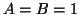

Next: Qu'est-ce qu'un repère?
Up: Un peu de théorie
Previous: Qu'est-ce qu'une base de
Contents
Rappelons qu'un espace de Hilbert  est séparable s'il existe une
suite de fonction
est séparable s'il existe une
suite de fonction
 telle que
.
Soit un espace séparable de Hilbert. Alors les deux affirmations
suivantes sont équivalentes:
telle que
.
Soit un espace séparable de Hilbert. Alors les deux affirmations
suivantes sont équivalentes:
- La séquence
 forme une base de Riesz
pour H.
- Il existe un produit scalaire équivalent sur , par rapport auquel
la séquence
devient une base orthogonale
pour .
En d'autres termes, une base de Riesz est une base orthormale à un
change de produit scalaire près. Cela explique le principe derrière
les ondelettes de Battle-Lemariée: comme les B-splines forment des
bases de Riesz, il est possible de les orthonormaliser.
Daniel Lemire
2004-02-02